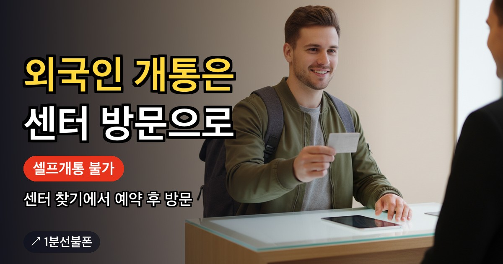
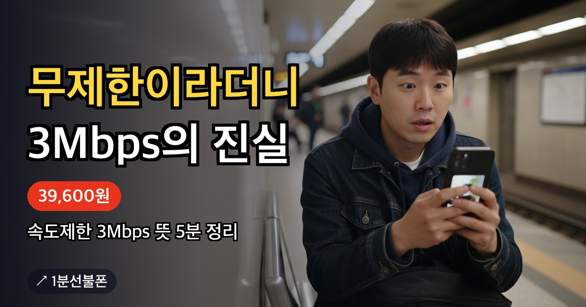

외국인이 선불폰을 개통할 때 가장 먼저 확인할 것은 방식입니다. 앤텔레콤 안내에서 외국인(여권)은 셀프개통 불가 대상이고, 이 경우 센터를 찾아가는 센터 내방 개통이 필요합니다. 신청 페이지에서 헤매기 전에 센터를 찾아 예약하는 순서와 방문 전에 확인할 것을 정리했습니다.
- 외국인은 온라인 셀프개통이 아니라 센터 방문 개통
- 앤텔레콤 안내에서 외국인(여권)은 셀프개통 불가 대상이고 여권으로 비대면 개통은 불가
- 센터 찾기에서 가까운 센터를 고르고 카카오톡으로 예약, 주소·방문 시간은 예약 확인 뒤 안내
- 센터 방문은 실물 신분증이 기본 안내, 외국인이 인정받는 서류는 예약 때 확인
- 가입비 없음, 요금제 12,100원부터, 개통 후 충전까지 센터에서 도움
외국인 선불폰 개통은 센터 방문이 기본입니다
앤텔레콤 안내가 정한 셀프개통 불가 대상 가운데 하나가 외국인(여권)입니다. 불가 대상이면 센터를 직접 찾아가는 센터 내방 개통으로 진행합니다. 1분선불폰의 센터 찾기 화면에도 외국인이신 경우 센터 방문으로 개통할 수 있다고 안내되어 있습니다.
신청 페이지에서 여권으로 인증을 시도하며 시간을 쓰기보다 처음부터 센터 방문으로 준비하는 편이 빠릅니다. 유심이 있으면 5분이면 끝난다는 온라인 개통의 기준은 이 경우에 해당하지 않습니다.
온라인 셀프개통과 센터 방문 개통의 차이
| 구분 | 온라인 셀프개통 | 센터 방문 개통 |
|---|---|---|
| 신청 장소 | 앤텔레콤 신청 페이지 | 센터 |
| 본인 확인 | 본인 명의 간편인증서와 안면인증 | 실물 신분증 지참 |
| 외국인(여권) | 셀프개통 불가 대상 | 센터 내방 개통 |
| 시작 방법 | 신청 페이지에서 바로 시작 | 센터 찾기에서 예약 후 방문 |
온라인 신청이 막히는 이유를 하나하나 따질 필요 없이, 외국인이라면 오른쪽 열을 기준으로 준비하면 됩니다. 센터 방문이 처음이라면 선불폰 방문 개통 글의 흐름을 먼저 보세요.
센터 찾기에서 예약까지
예약 방식은 다른 이용자와 같습니다. 센터 찾기에서 센터를 고르고 예약 내용을 카카오톡으로 보낸 다음, 확인 연락에서 주소와 방문 시간을 받습니다. 단계별 설명은 선불폰 방문 개통 글에 있으니 이 글에서는 외국인이 챙길 점만 짚습니다.
예약 메시지에는 외국인이라는 점과 지금 갖고 있는 신분 서류를 함께 적어 보내세요. 필요한 서류를 미리 안내받을 수 있어 헛걸음을 줄입니다. 센터 위치는 시·구·동 단위까지만 보이므로, 지역명으로 둘러보고 싶다면 지역별 안내도 쓸 수 있습니다.
방문 때 챙길 것과 미리 물어볼 것
- 실물 신분증 — 센터 방문의 기본 준비물로 안내됩니다.
- 외국인이 인정받는 신분 서류의 종류 — 예약 때 먼저 확인하세요.
- 유심 준비 여부 — 미리 사 가야 하는지 예약 상담에서 확인하세요.
- 요금제 — 정했다면 예약 양식에 적고, 아니면 상담 후 결정을 고르세요.
앤텔레콤 자주 묻는 질문과 1분선불폰 센터 안내에는 외국인이 가져가야 할 서류 목록이 따로 없습니다. 서류를 짐작으로 챙기기보다 예약 카카오톡에서 어떤 신분 서류로 접수할 수 있는지 먼저 물어보는 쪽이 정확합니다.
가입 조건과 비용
선불폰 가입 조건으로 안내되는 것은 대한민국 거주 하나이고, 신용조회는 없습니다. 외국인의 개통 방식은 센터 방문으로 정해져 있고, 가입 조건의 세부 적용은 예약 상담에서 확인하는 것이 정확합니다.
비용은 가입비가 없고 요금제는 월 12,100원부터입니다. 센터에서는 개통을 마친 뒤 충전까지 도와줍니다. 요금제를 미리 보고 싶다면 요금제 비교를, 편의점에서 파는 앤텔레콤용 유심(6,600~8,800원)이 필요한지 궁금하다면 유심 준비 안내를 참고하세요.
외국인 개통 전 체크리스트
센터에 가기 전에 아래를 확인해 두면 헛걸음을 줄일 수 있습니다.
- 온라인이 아니라 센터 방문으로 진행한다는 점을 확인했는지
- 센터 찾기에서 가까운 센터를 골랐는지
- 카카오톡으로 예약을 보내고 주소·방문 시간 안내를 받았는지
- 갖고 있는 신분 서류로 접수할 수 있는지 예약 때 물어봤는지
- 요금제를 정했는지, 상담 후 결정으로 적었는지
센터 방문이 필요한 다른 경우와 일반 조건은 선불폰 개통 조건 글에서 볼 수 있습니다.
자주 묻는 질문
외국인은 온라인으로 선불폰을 개통할 수 없나요?
네, 외국인은 앤텔레콤 신청 페이지의 셀프개통 대상이 아니라 센터를 방문해 개통해야 합니다. 여권으로는 비대면 개통이 되지 않습니다.
여권이 있으면 셀프개통이 되나요?
되지 않습니다. 앤텔레콤 안내에서 외국인(여권)은 셀프개통 불가 대상이라 센터 내방 개통이 필요합니다.
센터 예약은 어떻게 하나요?
센터 찾기에서 가까운 센터를 고르고 예약 내용을 카카오톡으로 보내면 됩니다. 주소와 방문 시간은 예약이 확인된 뒤 안내받으며, 화면에는 센터 위치가 시·구·동까지만 나옵니다.
센터에 무엇을 가져가야 하나요?
센터에는 실물 신분증을 들고 가는 것이 기본 안내입니다. 외국인이 어떤 신분 서류로 접수할 수 있는지는 공개된 안내에 따로 없으니 예약할 때 먼저 확인하세요.
센터에서 개통하면 충전도 도와주나요?
센터 안내에 개통을 마친 뒤 충전까지 도와준다고 되어 있습니다. 가입비는 없고 요금제는 월 12,100원부터입니다.
같이 보면 좋은 글

미성년자 선불폰 개통 — 셀프개통은 안 되고 보호자가 센터에서 접수합니다
자녀 이름으로 선불폰을 만들어 주려는 보호자가 먼저 알아야 할 것은 개통 방식입니다. 앤텔레콤 안내에서…

개인회생 선불폰 개통 — 회생·파산·워크아웃 중에도 내 명의 번호 만드는 법
개인회생이나 개인 파산, 워크아웃, 채무조정 절차를 밟고 있어도 선불폰은 개통할 수 있습니다. 선불폰은…

데이터 무제한 선불폰, 39,600원 요금제의 속도제한 3Mbps는 어떤 뜻일까요
데이터를 많이 쓰는 사람이 선불폰을 알아볼 때 가장 궁금한 점은 "정말 무제한이 되는지"입니다. 선불폰의…

미납 선불폰, 연체·신용불량이어도 개통되는 이유
통신비를 못 내 번호가 정지됐거나 새 개통이 막힌 상태라면 선불폰을 확인해보세요. 선불폰은 요금을 먼저…